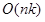
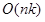
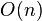

Sorting Algorithms
Insertion Sort
Η ταξινόμηση με εισαγωγή είναι ένας απλός αλγόριθμος ταξινόμησης, ο οποίος χτίζει την τελική μορφή της ταξινομημένης λίστας αλλάζοντας ένα στοιχείο κάθε φορά. Δεν είναι τόσο αποδοτική σε μεγάλες λίστες σε σύγκριση με προηγμένους αλγόριθμους ταξινόμησης, όπως η γρήγορη ταξινόμηση (quicksort), η ταξινόμηση σωρού (heapsort) και η ταξινόμηση με συγχώνευση (merge sort). Παρόλα αυτά έχει αρκετά πλεονεκτήματα όπως είναι η απλή υλοποίηση, η αποτελεσματικότητα σε σχετικά μικρά σύνολα δεδομένων αλλά και σε σύγκριση με άλλους τετραγωνικούς αλγόριθμους (  ) όπως η ταξινόμηση με επιλογή και η ταξινόμηση φυσαλίδας. Ακόμη ο αλγόριθμος είναι αποδοτικός για σύνολα δεδομένων που είναι ήδη ταξινομημένα στο μεγαλύτερο μέρος τους, με χρονική πολυπλοκότητα  εφόσον κάθε στοιχείο κατά την είσοδο δεν απέχει περισσότερες από k θέσεις από τη σωστά ταξινομημένη θέση του. Τέλος είναι σταθερός διότι δεν αλλάζει τη σχετική σειρά στοιχείων με ίδια κλειδιά, απαιτεί μία σταθερή ποσότητα ως επιπλέον χώρο μνήμης και μπορεί να ταξινομήσει μία λίστα καθώς την λαμβάνει.
) όπως η ταξινόμηση με επιλογή και η ταξινόμηση φυσαλίδας. Ακόμη ο αλγόριθμος είναι αποδοτικός για σύνολα δεδομένων που είναι ήδη ταξινομημένα στο μεγαλύτερο μέρος τους, με χρονική πολυπλοκότητα  εφόσον κάθε στοιχείο κατά την είσοδο δεν απέχει περισσότερες από k θέσεις από τη σωστά ταξινομημένη θέση του. Τέλος είναι σταθερός διότι δεν αλλάζει τη σχετική σειρά στοιχείων με ίδια κλειδιά, απαιτεί μία σταθερή ποσότητα ως επιπλέον χώρο μνήμης και μπορεί να ταξινομήσει μία λίστα καθώς την λαμβάνει.
Η ταξινόμηση με εισαγωγή εκτελεί επαναλήψεις, χρησιμοποιώντας ένα στοιχείο εισόδου σε κάθε επανάληψη αναπτύσσοντας μία ταξινομημένη λίστα εξόδου. Σε κάθε επανάληψη αφειρεί ένα στοιχείου εισόδου, βρίσκει τη θέση στην οποία ανήκει μέσα στην ταξινομημένη λίστα και το εισάγει εκεί. Επαναλαμβάνει μέχρι να μην απομείνουν άλλα στοιχεία εισόδου.
Στην καλύτερη περίπτωση όπου η λίστα εισόδου είναι ήδη ταξινομημένη ο αλγόριθμος έχει γραμμική πολυπλοκότητα  . Σε κάθε επανάληψη το στοιχείο που πρόκειται να εισαχθεί συγκρίνεται μόνο με το δεξιότερο στοιχείο του ταξινομημένου υποτμήματος του πίνακα. Η πιο απλή χειρότερη περίπτωση είναι η είσοδος να είναι ταξινομημένη με την αντίθετη σειρά. Σε κάθε περίπτωση όπου κάθε στοιχείο είναι το μικρότερο από όλα τα προηγούμενα, ο αλγόριθμος πρέπει να ελέγξει και να μετακινήσει όλα τα στοιχεία του ταξινομημένου υποπίνακα σε κάθε επανάληψη. Αυτό συνεπάγεται ότι η ταξινόμηση με εισαγωγή έχει τετραγωνική πολυπλοκότητα . Η μέση πολυπλοκότητα είναι κι αυτή τετραγωνική με αποτέλεσμα η ταξινόμηση με εισαγωγή να μην αποτελεί πρακτική λύση για ταξινόμηση λιστών με μεγάλο μέγεθος. Παρόλα αυτά είναι ένας από τους πιο γρήγορους αλγόριθμους για ταξινόμηση μικρών συνόλων, πιο γρήγορος και από τη γρήγορη ταξινόμηση, η οποία σε μερικές υλοποιήσεις χρησιμοποιεί την ταξινόμηση με εισαγωγή για πίνακες μικρότερους από ένα συγκεκριμένο κατώφλι.

Pseudocode
2.
3.
4.
5.
6.
7.
8.
9.
10.
11.
12.
13.end
Applet
Example
Έστω ο πίνακας A=[15 1 7 3 2 25 20 18 30 250] μήκους 10. Θέλουμε να ταξινομήσουμε τον Α σε αύξουσα σειρά.
Επανάληψη 1i=1, j=1, B=A[i]=1,
Ο δείκτης i λαμβάνει την τιμή 1, το j γίνεται επίσης μονάδα και στη μεταβλητή Β αναθέτουμε το 2ο στοιχείο του Α. Η συνθήκη του βρόχου while εξετάζει αν το j είναι θετικό και αν υπάρχει κάποιο από τα προηγούμενα στοιχείο που είναι μεγαλύτερο από το τρέχον στοιχείο του Α. Στη συγκεκριμένη περίπτωση υπάρχει μόνο ένα προηγούμενο στοιχείο διότι το τρέχον είναι το 2ο στοιχείο του πίνακα. Το 1ο στοιχείο είναι το 15 και είναι μεγαλύτερο από το 1 οπότε θα μεταφερθεί στη θέση 1 και ο δείκτης j θα μειωθεί κατά μία μονάδα με αποτέλεσμα να μην ικανοποιείται η συνθήκη j > 0.
1>0 && A[0]=15>1 -> A[1]=15, j=0Στη θέση που έμεινε κενή (δηλ. j = 0) ανατίθεται η τιμή του Β (A[0] = 1) με τον πίνακα Α να παίρνει την ακόλουθη μορφή.
A=[1 15 7 3 2 25 20 18 30 250]Επανάληψη 2
i=2, j=2, B=A[2]=7,
Στη 2η επανάληψη το i γίνεται 2, το j επίσης και στη μεταβλητή Β ανατίθεται το 3ο στοιχείο του πίνακα. Η συνθήκη ισχύει και στη θέση 2 μεταφέρεται η τιμή 15 αλλά το τρέχον στοιχείο (Β = 7) είναι μεγαλύτερο από το 1 οπότε δεν γίνεται άλλη αλλαγή και η κενή θέση αυτή τη φορά είναι η θέση 1.
2>0 && A[1]=15>7 -> A[2]=15, j=11>0 && A[0]=1<7
Στη θέση 1 καταλήγει η τιμή της μεταβλητής Β.
A[1]=7Ο πίνακας με τη 2η επανάληψη είναι ο ακόλουθος.
A=[1 7 15 3 2 25 20 18 30 250]…
Επανάληψη 9
Κατά την τελευταία επανάληψη ο πίνακας έχει ήδη ταξινομηθεί με το παρακάτω αποτέλεσμα.
A=[1 2 3 7 15 18 20 25 30 250]